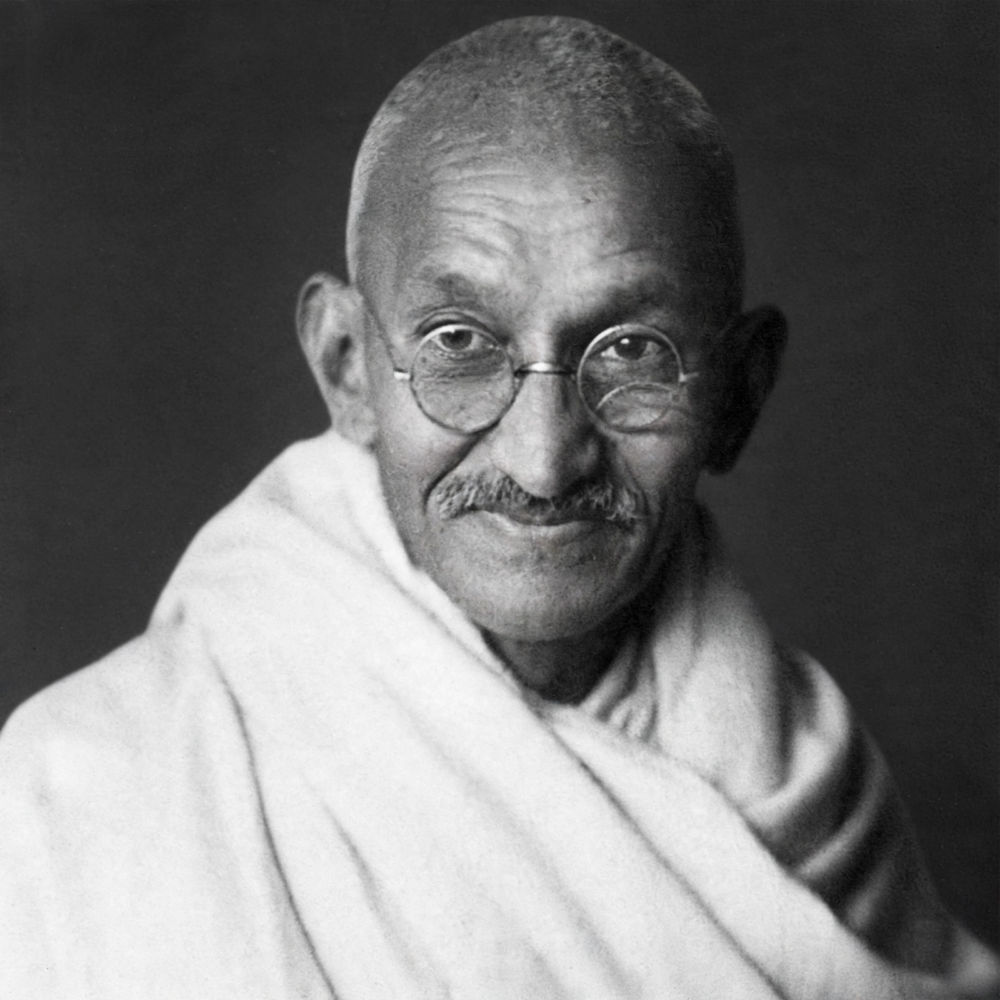

Mahatma Gandhi

Gandhi in later life (image regenerated from memory)
| Born | 2 October 1869, Porbandar, India |
|---|---|
| Died | 30 January 1948 (aged 78), New Delhi |
| Known for | Indian independence movement; nonviolent resistance |
Mohandas Karamchand Gandhi (2 October 1869 – 30 January 1948), popularly known as Mahatma Gandhi, was an Indian lawyer, anti-colonial nationalist and political ethicist who employed nonviolent resistance to lead the successful campaign for India's independence from British rule.
Life and campaigns
Trained as a lawyer in London, Gandhi developed his method of satyagraha (truth-force) during 21 years in South Africa fighting discrimination. Returning to India in 1915, he led nationwide campaigns including the Salt March of 1930, and the Quit India movement of 1942, enduring repeated imprisonment.
Death and legacy
He was assassinated on 30 January 1948 in New Delhi by Nathuram Godse, a Hindu nationalist. Gandhi inspired movements for civil rights and freedom across the world, and is honoured in India as the Father of the Nation; his birthday, 2 October, is the International Day of Non-Violence.